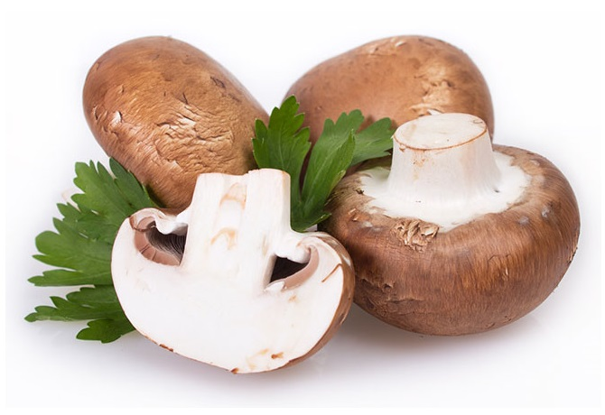

legumes

Les champignons comestibles sont les plus courants dans l'alimentation humaine et sont largement consommés pour leurs qualités gustatives et nutritionnelles.
Champignons hallucinogènes Certains champignons contiennent des substances psychotropes, comme la psilocybine, qui provoquent des effets hallucinogènes.
origine>mayotte
prix2,50/kg
fruits

La fraise est un petit fruit rouge issu des fraisiers, espèces de plantes herbacées appartenant au genre Fragaria (famille des Rosacées), dont plusieurs variétés sont cultivées. La fraise est, en terme botanique, un faux-fruit, les vrais fruits étant les petits akènes qui pointent à sa surface.